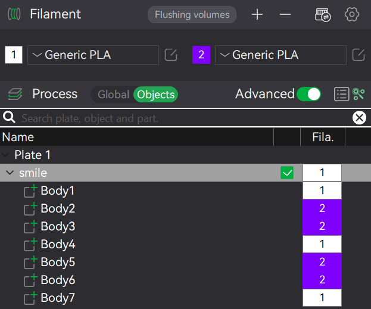
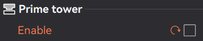
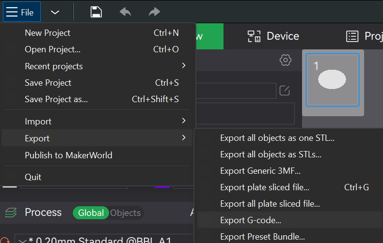

Once you've patched your G-code, you're ready to get it to your printer and handle the manual filament changes.
Follow these steps:
Choose one of the following methods to transfer your patched G-code file to your printer:
Option 1: SD Card
Insert your SD card into your computer.
Navigate to the models folder.
Copy the -patched.gcode file into that folder.
Safely eject the SD card and insert it into your printer.
Select the file on the printer and start printing.
Option 2: Bambu Studio v1
Open Bambu Studio v1 (note: v2 cloud upload
currently doesn't support the patch).
Drag your -patched.gcode into the prepare window.
Review the preview to confirm it looks correct.
Click Send to Printer to begin the print.
Once your print starts, the printer will pause at specific points for you to swap filaments.
Here's how to handle it:
🧰 Performing the Manual Filament Change on Your Printer
The printer will pause automatically at the designated layer and display
a message, likely stating "Printing was paused by the user" or similar. DO NOT press 'Resume Printing' on this
screen!
Instead of resuming, locate and press the 'X' button (or
'Cancel' / 'Back' depending on your printer's UI) to exit this prompt.
Navigate to the 'Filament' section on your printer's
screen.
Perform the manual filament change following your printer's usual
procedure. This typically involves unloading the old filament, loading the new filament, and purging any old
material until the new color is clean.
Once the filament change is complete, return to the main print screen on
your printer.
Finally, press 'Resume' to continue your print. The printer will
seamlessly pick up where it left off with the new filament!
❓ How to Prepare Your G-code for Multi-Filament Prints
If you're looking to print with multiple colors or materials on a single-extruder printer (without an AMS),
you'll need to prepare your G-code correctly in your slicer. Here's a general guide, focusing on Bambu Studio:
Step 1: Open Your Model & Add Filaments
Start by opening your 3D model (e.g., an STL or 3MF file) in Bambu Studio.
Add at least one additional filament to your project. This will typically give you two or more filament
slots to work with. For example, if you're printing in two colors, you'll need two distinct filament
profiles.
Step 2: Assign Colors to Objects/Parts
If your model consists of multiple separate objects, select each object and assign it a different color
(filament) from the available slots.

If your model is a single object with different parts you want to color, use the "Paint" tool or "Split
to Parts" function in Bambu Studio to separate the sections and assign colors accordingly.
Step 3: Configure Print Settings
Select your desired print settings such (layer height, infill, supports, etc.) as you normally would for
your printer and chosen filaments.
Crucial: Disable "Prime Tower". This setting is typically found under the "Others" tab
in your print settings. A prime tower purges filament to a separate structure, which isn't necessary and
can cause issues with manual pauses.

Step 4: Slice and Export G-code
Once all settings are configured and colors are assigned, proceed to "Slice Plate". This will generate
the G-code for your print.
After slicing, export the G-code file. In Bambu Studio, this is usually done via
File -> Export -> Export G-Code.... Save the file to your computer.

This exported G-code file is what you will upload to our tool for patching. Our tool will automatically
insert pauses before each filament change.
How our tool works: Our tool reads your uploaded G-code file and automatically identifies
where your slicer has instructed a filament change. It then replaces those instructions with a special command
(M400 U1) that tells your 3D printer to pause the print and wait for you to manually change the
filament. This way, you get perfectly timed pauses for multi-color or multi-material prints, even without a
fancy AMS system!